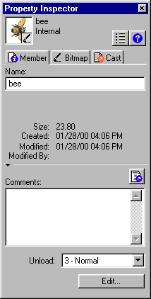

Using Director > Cast members and Cast windows > Viewing and setting cast member properties
Using Director > Cast members and Cast windows > Viewing and setting cast member properties |
Viewing and setting cast member properties
You can display and set properties for individual cast members, or for multiple cast members at once, even if the cast members are different types. In both cases, you use the Property Inspector.
You can also set cast member properties by using Lingo (see Setting cast member properties using Lingo).
To view and set cast member properties:
1 |
Select one or more cast members. |
2 |
Do one of the following: |
If the Property Inspector is open, click the Member tab. |
|
If the Property Inspector is not open, choose Window > Inspectors > Property, then click the Member tab.
 |
|
As with all fields in the Property Inspector, if you've selected multiple cast members, the information common to all of the selected cast members appears. Any changes you make apply to all of the selected cast members. |
|
3 |
Display the Graphical view on the Member tab. |
The Member tab displays the following: |
|
Editable fields to view or change the cast member's name, a Comments field to enter text that appears in the Comments column of the Cast List window, and an Unload pop-up menu that lets you choose how to remove a cast member from memory. For more information on using the Unload pop-up menu, see Controlling cast member unloading. |
|
View-only fields that indicate the cast member's size, when the cast member was created and modified, and the name of the person who modified the cast member. |
|
For an Xtra cast member, the information displayed in the Property Inspector is determined by the developer of the Xtra. Some Xtras have options in addition to those listed here. For non-Macromedia Xtras, refer to documentation supplied by the developer. |
|
For information on specific cast member properties, see these topics:
You can open any cast member in the appropriate editor directly from the Cast window. You can use Director's internal media editors, such as the Text, Paint, or Vector Shape window, or you can specify external editors for certain types of cast members. See Launching external editors.
To launch an editor for a cast member:
Do one of the following:
Double-click a cast member in the Cast window. |
|
Double-click a sprite containing the cast member in the Score or on the Stage. See Sprites overview. |